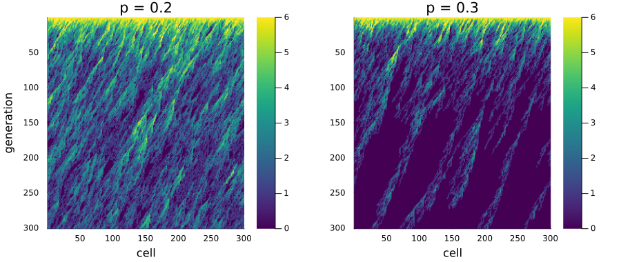
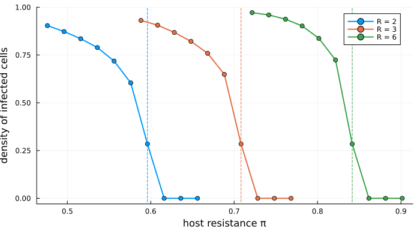
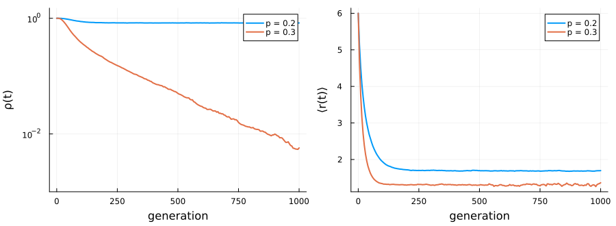
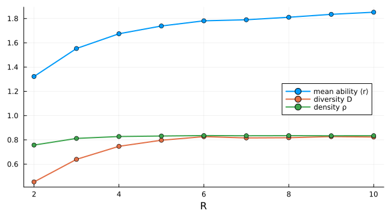

Viral fronts in host tissue
Simon Frost
- Overview
- The model
- Two fronts
- An exact threshold
- Survival and extinction over time
- More offspring do not help
- Deviations from the source
Overview
A plant virus spreads through a leaf cell by cell. In a well-mixed host, a virus that makes more offspring always spreads faster. Capitán et al. (2011) asked whether space changes this. Their model is a multicomponent generalisation of the Domany–Kinzel automaton. Neighbouring virions compete for the same cells, and the host resists infection. The answer is that a finite host resistance can stop the infection however many offspring each virion makes. This model is a reproduction.
ENV["GKSwstype"] = "100"
using EcologicalCellularAutomata
using CellularAutomataCore
using Plots
using StatisticsThe model
The model follows only the front of the infection. A ring of L cells is the current row of tissue, and each generation infects the next row. Time is therefore the second dimension of the tissue. A cell holds the replicative ability r ∈ 0:R of the virion that infected it, the number of infective offspring it makes. Cell i of the next row receives the offspring of cells i and i + 1:
- all
n = r₁ + r₂virions fail to infect with probabilityπⁿ, whereπis the host’s resistance; - otherwise one of them infects. It descends from each parent in proportion to the parent’s offspring, and it loses one unit of ability with probability
por gains one with probabilityq(up toR).
model = build(:domany_kinzel_viral; R=6)CAModel domany_kinzel_viral
Capitán et al. (2011) multicomponent Domany-Kinzel automaton, R = 6
states:
r::Int8 = 6 ∈ 0:6 # replicative ability (0: empty)
parameters:
π = 0.1 # host resistance: probability that one virion fails to infect
p = 0.2 # probability of a deleterious mutation
q = 0.01 # probability of a beneficial mutation
rule: LocalRule(<anonymous function>, Offsets((1,),))viral_transition gives the probability of each outcome, the source’s equations 2 and 3:
[round(viral_transition(r, 3, 1; π=0.1, p=0.2, q=0.01, R=6); digits=4) for r in 0:6]7-element Vector{Float64}:
0.0501
0.1975
0.1525
0.5924
0.0075
0.0
0.0Two fronts
The front is drawn generation by generation, top to bottom. Each row is the ring at one time, coloured by replicative ability. With deleterious mutations at p = 0.2 the infection persists. At p = 0.3 it dies out:
function spacetime(p; L=300, T=300, seed=2)
sol = solve(problem(:domany_kinzel_viral; L, tspan=T, seed, pmap=(; π=0.1, p, q=0.01)))
return permutedims(reduce(hcat, sol.u))
end
plot(heatmap(spacetime(0.2); c=cgrad(:viridis; categorical=true), clims=(0, 6),
yflip=true, xlabel="cell", ylabel="generation", title="p = 0.2"),
heatmap(spacetime(0.3); c=cgrad(:viridis; categorical=true), clims=(0, 6),
yflip=true, xlabel="cell", title="p = 0.3");
layout=(1, 2), size=(900, 380), left_margin=4Plots.mm, bottom_margin=4Plots.mm)
Within a few generations the ability falls from 6 to between 1 and 3. Mutation pushes it down, and competition gives little advantage to the fitter virions, because each cell is won by only one virion.
An exact threshold
Without mutation (p = q = 0) every virion keeps the ability R. A cell is then infected unless all its parents’ offspring fail, which is directed bond percolation. The source deduces the critical resistance from the known percolation threshold: π_c = 0.3552998^(1/R). Above it the infection dies out. The density of infected cells after 3000 generations on a ring of 2000 cells:
πc(R) = 0.3552998^(1 / R)
function density(R, π; L=2000, T=3000, seeds=1:2)
return mean(viral_density(solve(problem(:domany_kinzel_viral; L, R, tspan=T, seed=s,
pmap=(; π, p=0.0, q=0.0));
save_everystep=false).u[end]) for s in seeds)
end
fig = plot(; xlabel="host resistance π", ylabel="density of infected cells",
legend=:topright, size=(700, 380))
for (R, c) in ((2, 1), (3, 2), (6, 3))
πs = range(πc(R) - 0.12, πc(R) + 0.06; length=10)
plot!(fig, πs, [density(R, π) for π in πs]; label="R = $R", lw=2, marker=:circle,
color=c)
vline!(fig, [πc(R)]; label="", ls=:dash, color=c)
end
fig
The dashed lines are the exact thresholds, 0.596, 0.708 and 0.842. For each R the density falls to zero at the first resistance tried beyond the threshold. At the threshold itself some infection is still left after 3000 generations, because a front at the critical point dies out slowly, as a power of time.
Survival and extinction over time
The source’s Figure 4 follows a front of 100 000 cells with R = 6, π = 0.1 and q = 0.01. The density of infected cells and the mean ability of the virions are shown for the two mutation rates:
series = map((0.2, 0.3)) do p
sol = solve(problem(:domany_kinzel_viral; L=100_000, tspan=1000, seed=1,
pmap=(; π=0.1, p, q=0.01)); saveat=5)
(p=p, t=sol.t, ρ=viral_density.(sol.u), r=viral_mean_ability.(sol.u))
end
plot(plot([s.t for s in series], [s.ρ for s in series]; yscale=:log10, lw=2,
label=["p = 0.2" "p = 0.3"], xlabel="generation", ylabel="ρ(t)",
ylims=(1e-3, 1.5)),
plot([s.t for s in series], [s.r for s in series]; lw=2, label=["p = 0.2" "p = 0.3"],
xlabel="generation", ylabel="⟨r(t)⟩");
layout=(1, 2), size=(900, 330), left_margin=4Plots.mm, bottom_margin=5Plots.mm)
[(p=s.p, ρ_at_1000=round(s.ρ[end]; sigdigits=2), r_at_1000=round(s.r[end]; digits=2))
for s in series]2-element Vector{@NamedTuple{p::Float64, ρ_at_1000::Float64, r_at_1000::Float64}}:
(p = 0.2, ρ_at_1000 = 0.83, r_at_1000 = 1.7)
(p = 0.3, ρ_at_1000 = 0.0057, r_at_1000 = 1.36)As in the source, the front survives at p = 0.2, with a density near 0.8 and a mean ability near 1.7. At p = 0.3 its density decays steadily towards extinction, while the few surviving virions keep a mean ability near 1.3.
More offspring do not help
In a well-mixed host the virus would spread whenever (1 − π) R (1 − p) > 1. With π = 0.1 and p = 0.2 that holds for any R ≥ 2, and the mean ability would grow with R. The source’s Figure 5a shows instead that in space the mean ability saturates. Here it is averaged over generations 2000 to 3000 on a front of 10 000 cells:
function equilibrium(R; L=10_000)
sol = solve(problem(:domany_kinzel_viral; L, R, tspan=3000, seed=R,
pmap=(; π=0.1, p=0.2, q=0.01)); saveat=2000:20:3000)
return (r=mean(viral_mean_ability.(sol.u)), D=mean(viral_diversity.(sol.u)),
ρ=mean(viral_density.(sol.u)))
end
Rs = 2:10
eq = [equilibrium(R) for R in Rs]
plot(Rs, [[e.r for e in eq] [e.D for e in eq] [e.ρ for e in eq]]; marker=:circle, lw=2,
label=["mean ability ⟨r⟩" "diversity D" "density ρ"], xlabel="R",
legend=:right, size=(650, 350))
The mean ability rises steeply from about 1.3 at R = 2 to about 1.75 at R = 5, then only slowly, by about 0.1 more up to R = 10. The density and the diversity level off from R = 6. The source reads the same curve as reaching a plateau near 1.7. Either way, a virion that could make ten offspring gains almost nothing. Its offspring compete with each other and with their neighbours for the same few cells, and deleterious mutations pull their ability back down. A host resistance that stops a weak virus therefore stops a strong one as well. This is the hindrance in the source’s title.
Deviations from the source
foreach(d -> println("- ", d), model_info(:domany_kinzel_viral).deviations)- None in the rule. The source states neither the number of replicates nor the grid of its phase diagrams; the vignette uses its own, smaller, runs.Capitán, José A., José A. Cuesta, Susanna C. Manrubia, and Jacobo Aguirre. 2011. “Severe Hindrance of Viral Infection Propagation in Spatially Extended Hosts.” PLoS ONE 6 (8): e23358. https://doi.org/10.1371/journal.pone.0023358.